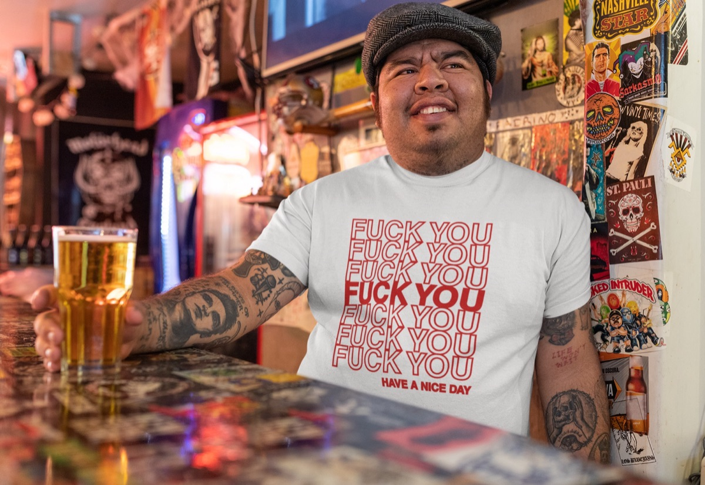

We make shirts that are supposed to be funny. So we went and read what the actual scientific literature says about humor — not blog-post science, but peer-reviewed studies indexed in PubMed, the US National Library of Medicine's database. Some of it is more interesting than we expected. One finding, in particular, changed how we think about writing a shirt.
Here's what's in there, what it means, and — importantly — what it doesn't mean.
First, the claim we are not making
Nobody has ever run a randomized controlled trial on graphic tees. There is no study showing that owning a shirt with a joke on it improves your health, and anyone who tells you otherwise is selling something harder than we are.
What does exist is a substantial body of research on two separate things: laughter as a physiological event, and humor style as a personality trait. A funny shirt sits at the intersection of both — it's a small, portable device for producing laughter in other people, and it's a public declaration of what kind of funny you are. So the research is relevant. It's just relevant sideways, and we're going to be honest about the gap.
Laughter measurably drops your stress hormone
This is the most solid finding in the pile. In 2023, Kramer and Leitao published a systematic review and meta-analysis in PLOS ONE pooling eight interventional studies covering 315 adults, looking at what spontaneous laughter does to cortisol — the primary stress hormone.1
Pooled across all eight studies, laughter interventions reduced cortisol by 31.9% compared with control (95% CI −47.7% to −16.3%). A single laughter session alone produced a 36.7% reduction. Restricting the analysis to the four randomized controlled trials — the strongest study design in the set — gave a 37.2% reduction versus placebo. The authors found no evidence of publication bias.
Kramer & Leitao, PLOS ONE, 2023 (PMID 37220157)
That's a real effect size, from a real meta-analysis, with a pre-registered protocol. Most of the included studies did something simple: they showed people a comedy video. Five of the eight did exactly that.
A separate randomized study in the journal Stress found that a laughter yoga session blunted the cortisol response to an acute laboratory stressor in healthy participants.2 Same direction, different method.
Laughing with people is doing something chemical
The stranger result is what happens when laughter is social.
Robin Dunbar's group at Oxford ran six experiments — in labs watching videos, and in the wild at live stage performances — using change in pain threshold as an indirect assay for endorphin release. Pain thresholds were significantly higher after laughter than in control conditions. Critically, they showed the effect was driven by the laughter itself, not merely by being in a better mood.3
That was 2012, and it was inference from a proxy measure. In 2017 a Finnish team tested it directly with PET imaging, using a radioligand that binds to μ-opioid receptors. Twelve participants spent 30 minutes watching comedy with close friends, then were scanned.
Social laughter triggered measurable endogenous opioid release in the thalamus, caudate nucleus and anterior insula. Baseline opioid receptor availability in the cingulate and orbitofrontal cortices also predicted how much a person laughed. The authors argue this is a neurochemical pathway supporting the formation and maintenance of human social bonds — the thing other primates get from grooming each other.
Manninen et al., The Journal of Neuroscience, 2017 (PMID 28536272)
The honest footnote: a 2021 follow-up from Dunbar's group found that while laughter did enhance the sense of social bonding, it did not reliably make people more generous in an economic game.4 Laughter bonds you to people. It doesn't automatically make you nicer to them. Those turn out to be different systems.
The part that actually changed how we write shirts
Here's the finding we didn't expect, and the one that matters most if your whole business is putting jokes on cotton.
Psychologists sort humor into four styles. Two are aimed outward: affiliative humor (jokes that bring people together — the shared, everyone's-in-on-it kind) and aggressive humor (jokes at someone else's expense: sarcasm, ridicule, punching at a target). Two are aimed inward: self-enhancing humor (finding life absurd as a coping mechanism) and self-defeating humor (making yourself the punchline to win approval).
A 2020 meta-analysis in Frontiers in Psychology collected 85 studies covering 27,562 participants to see how those four styles relate to subjective well-being.5
Affiliative and self-enhancing humor were associated with higher subjective well-being. Aggressive and self-defeating humor were associated with lower subjective well-being. Neither culture nor age moderated the relationship — the pattern held across the whole dataset.
Jiang, Lu, Jiang & Jia, Frontiers in Psychology, 2020 (PMID 33071846)
A related study found the same four humor styles track meaningfully with loneliness and with "anti-mattering" — the feeling that you don't matter to anyone.6
Read that again in the context of a t-shirt. A shirt is a joke you make at strangers, all day, without getting to explain yourself. If the joke is affiliative, the stranger is in on it — they read it, they get it, something briefly connects. If the joke is aggressive, the stranger is the target, and the transaction is entirely different.
This is not a moral argument, it's a design one. The shirts people keep wearing for years — the ones that become their shirt — are almost always the affiliative kind. A shirt that reads as an attack has a short half-life, because the wearer eventually gets tired of picking a fight on the way to the grocery store. We wrote a whole separate piece on the most affiliative joke format there is, the aggressive pun, which despite the name is about as gentle as humor gets.
Weird, not mean. That's the whole brief.
Shop funny t-shirtsSo what is a funny shirt actually doing?
Putting the pieces together honestly:
The laughter research is about social laughter. Dunbar's endorphin effects and the Finnish PET findings both come from people laughing with other people. A shirt's entire function is to happen in public. It's a prompt for exactly the kind of laughter that the research says does something — the shared kind, not the alone-scrolling kind.
The effect sizes belong to laughter, not to shirts. Wearing a tee is not a laughter intervention. Nobody in the Kramer meta-analysis got dosed with apparel. What a shirt does is raise the probability of a small social moment slightly, several times a day, for years. Whether that accumulates into anything is genuinely unstudied.
The humor-style research is the actionable part. That one doesn't require any extrapolation at all. The kind of joke you attach yourself to is associated with measurable differences in well-being, and you are choosing that kind every time you buy a shirt.
Common questions
Does wearing a funny t-shirt reduce stress?
There's no direct evidence, because no one has studied it. Laughter reduces cortisol by roughly a third in pooled interventional data.1 A shirt is a device that occasionally causes laughter. Draw your own conclusion, but don't call it medicine.
Is "laughter is the best medicine" scientifically supported?
Partially, and more than we assumed. The cortisol finding is a genuine meta-analytic result with no detected publication bias. The opioid-release finding is direct neuroimaging evidence. What isn't supported is the bigger folk claim that laughing cures disease.
What kind of humor is best for you?
Affiliative and self-enhancing, per 27,562 participants.5 Jokes that include people, and the ability to find your own life absurd.
Why does laughing with friends feel better than laughing alone?
Because — at least on the current evidence — it's chemically different. The PET study measured opioid release specifically in a social-laughter condition against a solitary baseline.7
The bottom line
We're not going to pretend a t-shirt is a health product. But there's something quietly validating about learning that the mechanism you were intuitively aiming at — make a stranger laugh, on purpose, in public — is one of the better-documented social behaviors in the literature.
And the design lesson is unambiguous: make the stranger part of the joke, not the butt of it. The data agrees with the instinct.
Laughter bonds you to people. It doesn't automatically make you nicer to them. Turns out those are different systems.
References
- Kramer CK, Leitao CB. Laughter as medicine: A systematic review and meta-analysis of interventional studies evaluating the impact of spontaneous laughter on cortisol levels. PLOS ONE. 2023;18(5):e0286260. PMID: 37220157
- Meier M, Wirz L, Dickinson P, Pruessner JC. Laughter yoga reduces the cortisol response to acute stress in healthy individuals. Stress. 2021;24(1):44–52. PMID: 32393092
- Dunbar RIM, Baron R, Frangou A, et al. Social laughter is correlated with an elevated pain threshold. Proceedings of the Royal Society B. 2012;279(1731):1161–1167. PMID: 21920973
- Dunbar RIM, Frangou A, Grainger F, Pearce E. Laughter influences social bonding but not prosocial generosity to friends and strangers. PLOS ONE. 2021;16(8):e0256229. PMID: 34388212
- Jiang F, Lu S, Jiang T, Jia H. Does the Relation Between Humor Styles and Subjective Well-Being Vary Across Culture and Age? A Meta-Analysis. Frontiers in Psychology. 2020;11:2213. PMID: 33071846
- MacDonald KB, Kumar A, Schermer JA. No Laughing Matter: How Humor Styles Relate to Feelings of Loneliness and Not Mattering. Behavioral Sciences. 2020;10(11):165. PMID: 33120905
- Manninen S, Tuominen L, Dunbar RI, et al. Social Laughter Triggers Endogenous Opioid Release in Humans. The Journal of Neuroscience. 2017;37(25):6125–6131. PMID: 28536272
All studies cited are indexed in PubMed, maintained by the US National Library of Medicine. This article summarizes published research for general interest and is not medical advice.